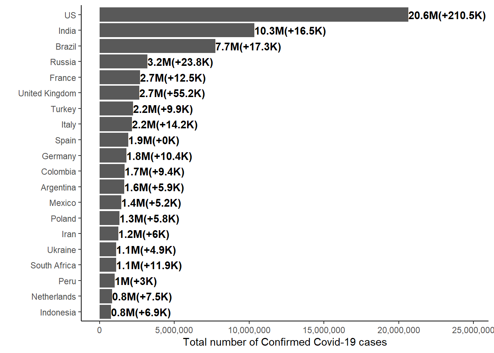
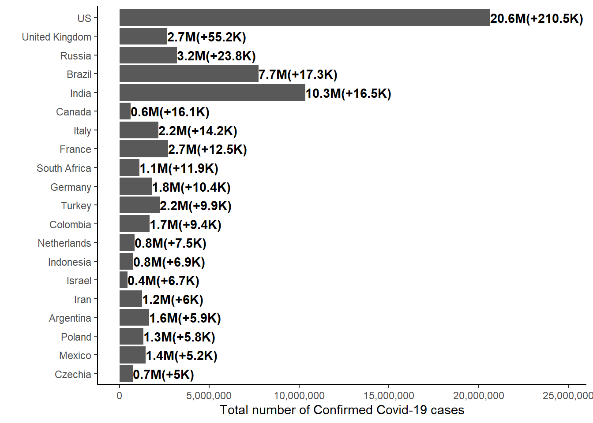
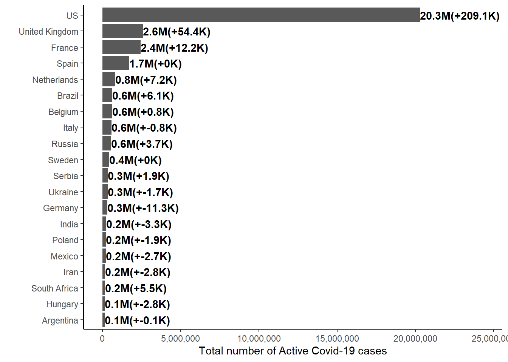
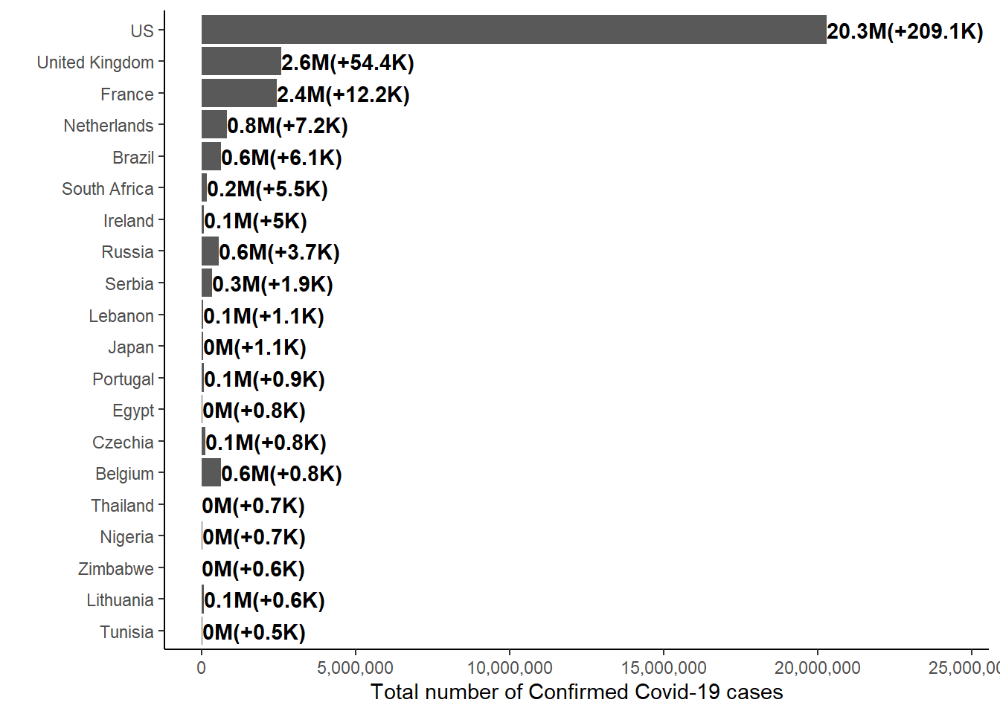
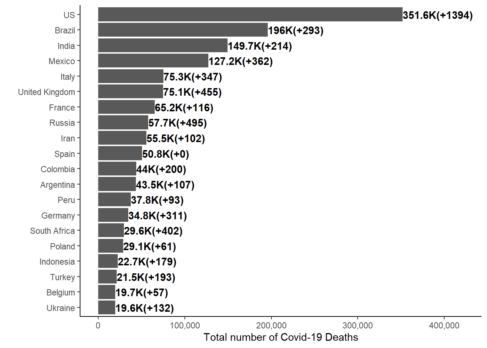
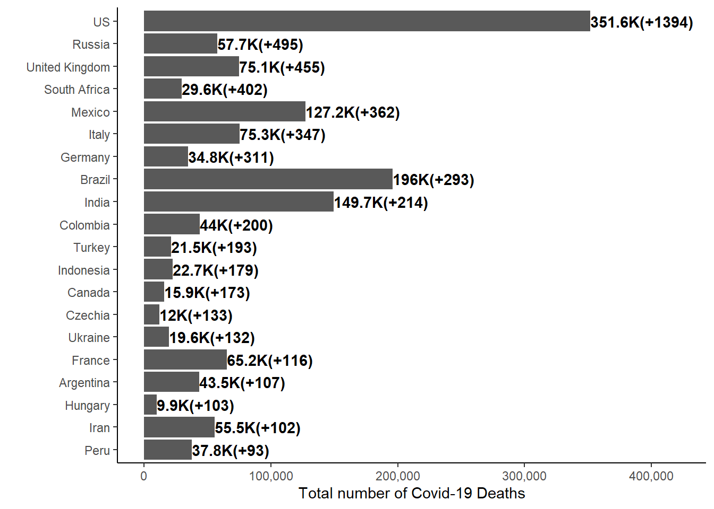
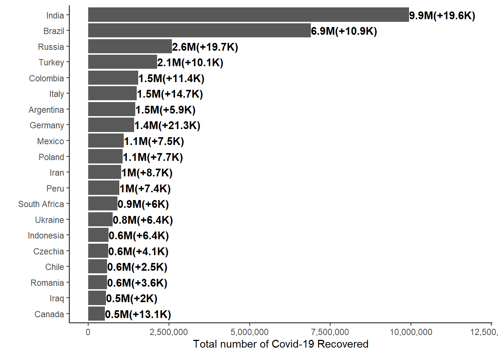
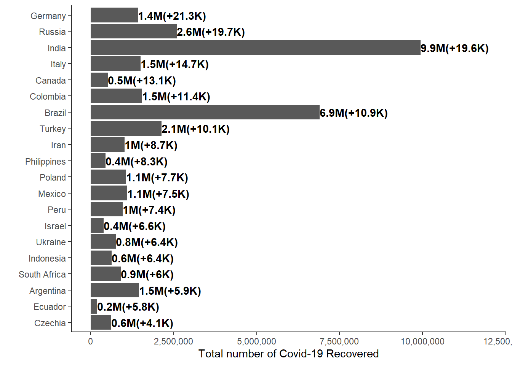

This blog post is to demonstrate how to extract the latest data set from a github repository and generate bar chart using ggplot2 R package.
req <- GET("https://api.github.com/repos/CSSEGISandData/COVID-19/git/trees/master?recursive=1")
filelist <- unlist(lapply(content(req)$tree, "[", "path"), use.names = F)
filelist <-
grep("csse_covid_19_data/csse_covid_19_daily_reports/([0-9])",
filelist, value = TRUE)All file names are stored in the filelist object, which looks something like below
## [1] "csse_covid_19_data/csse_covid_19_daily_reports/01-01-2021.csv"
## [2] "csse_covid_19_data/csse_covid_19_daily_reports/01-02-2021.csv"
## [3] "csse_covid_19_data/csse_covid_19_daily_reports/01-03-2021.csv"We can get the list of dates from the file names above by
basename(filelist)## [1] "01-01-2021.csv" "01-02-2021.csv" "01-03-2021.csv"Since these are still as character, we can convert these file names to dates by using mdy() function in the lubridate R package, which parse dates with, month, day and year components (in this order), i.e.
mdy(basename(filelist))## [1] "2021-01-01" "2021-01-02" "2021-01-03"Thus, we can get the lastest date from the avalible data set in the reposiity using the max() function across all the dates, i.e.
dates <- mdy(basename(filelist))
max(dates, na.rm = TRUE)## [1] "2021-01-03"We can get the previous date from this laest date by taking away one, i.e.
max(dates, na.rm = TRUE) - 1## [1] "2021-01-02"Once we obtain the latest dates, we can use this as the name of the file names to read-in the latest COVID-19 data.
latest_daily_cases <-
read_csv(
paste0(
"https://raw.githubusercontent.com/CSSEGISandData/COVID-19/master/",
filelist[which(dates == max(dates, na.rm = TRUE))]
)
)previous_daily_cases <-
read_csv(
paste0(
"https://raw.githubusercontent.com/CSSEGISandData/COVID-19/master/",
filelist[which(dates == (max(dates, na.rm = TRUE) - 1))]
)
)Current data set has broken down into different states, since we are only interest the records of different countries, we will need to aggregate these number accordingly, i.e.
latest_daily_cases_total <-
latest_daily_cases %>%
select(Country_Region, Confirmed:Active) %>%
rename(Country = Country_Region) %>%
pivot_longer(Confirmed:Active, names_to = "Type", values_to = "Count") %>%
group_by(Country, Type) %>%
summarise(Count_lastest = sum(Count, ne.rm = TRUE), .groups = "drop")
previous_daily_cases_total <-
previous_daily_cases %>%
select(Country_Region, Confirmed:Active) %>%
rename(Country = Country_Region) %>%
pivot_longer(Confirmed:Active, names_to = "Type", values_to = "Count") %>%
group_by(Country, Type) %>%
summarise(Count_previous = sum(Count, ne.rm = TRUE), .groups = "drop")Combine these two data set and compute the differences for plotting
daily_cases_total <-
latest_daily_cases_total %>%
left_join(previous_daily_cases_total) %>%
mutate(Count_change = Count_lastest - Count_previous)daily_cases_total %>%
group_by(Type) %>%
summarise("Lastest" = sum(Count_lastest, na.rm = TRUE),
"Changes" = sum(Count_change, na.rm = TRUE),
.groups = "drop") %>%
arrange(-Lastest) %>%
gt::gt() %>%
gt::fmt_number(2:3, suffixing = TRUE)| Type | Lastest | Changes |
|---|---|---|
| Confirmed | 85.12M | 535.18K |
| Recovered | 47.86M | 265.09K |
| Active | 35.33M | 255.07K |
| Deaths | 1.84M | 7.35K |
daily_cases_total %>%
filter(Country == "US") %>%
group_by(Type) %>%
summarise("Lastest" = sum(Count_lastest, na.rm = TRUE),
"Changes" = sum(Count_change, na.rm = TRUE),
.groups = "drop") %>%
arrange(-Lastest) %>%
gt::gt() %>%
gt::fmt_number(2:3, suffixing = TRUE)| Type | Lastest | Changes |
|---|---|---|
| Confirmed | 20.64M | 210.48K |
| Active | 20.29M | 209.09K |
| Deaths | 351.58K | 1.39K |
| Recovered | 1.00 | 0.00 |
daily_cases_total %>%
filter(Country == "United Kingdom") %>%
group_by(Type) %>%
summarise("Lastest" = sum(Count_lastest, na.rm = TRUE),
"Changes" = sum(Count_change, na.rm = TRUE),
.groups = "drop") %>%
arrange(-Lastest) %>%
gt::gt() %>%
gt::fmt_number(2:3, suffixing = TRUE)| Type | Lastest | Changes |
|---|---|---|
| Confirmed | 2.66M | 55.16K |
| Active | 2.58M | 54.35K |
| Deaths | 75.14K | 455.00 |
| Recovered | 6.09K | 350.00 |
top <- 20
max_y <-
daily_cases_total %>%
filter(Type == "Confirmed") %>% pull(Count_lastest) %>% max(na.rm = TRUE)
daily_cases_total %>%
filter(Type == "Confirmed") %>%
arrange(-Count_lastest) %>%
mutate(Country = forcats::fct_reorder(Country, Count_lastest))%>%
slice_head(n = top) %>%
ggplot(aes(x = Country, y = Count_lastest,
label = paste0(round(Count_lastest/1e6,1), "M",
"(+", round(Count_change/1e3, 1), "K)"))) +
geom_col() +
geom_text(hjust = 0, fontface = "bold") +
scale_y_continuous(labels = scales::comma, limits = c(0, max_y * 1.2)) +
labs(y = "Total number of Confirmed Covid-19 cases", x = "") +
theme_classic()+
coord_flip() 
daily_cases_total %>%
filter(Type == "Confirmed") %>%
arrange(-Count_change) %>%
mutate(Country = forcats::fct_reorder(Country, Count_change))%>%
slice_head(n = top) %>%
ggplot(aes(x = Country, y = Count_lastest,
label = paste0(round(Count_lastest/1e6,1), "M",
"(+", round(Count_change/1e3, 1), "K)"))) +
geom_col() +
geom_text(hjust = 0, fontface = "bold") +
scale_y_continuous(labels = scales::comma, limits = c(0, max_y * 1.2)) +
labs(y = "Total number of Confirmed Covid-19 cases", x = "") +
theme_classic()+
coord_flip() 





